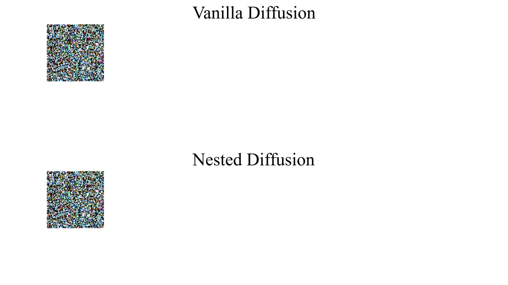
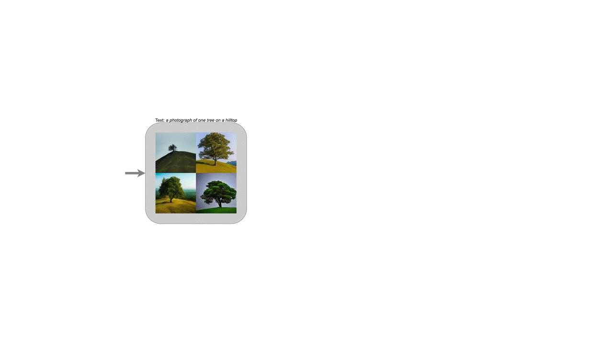
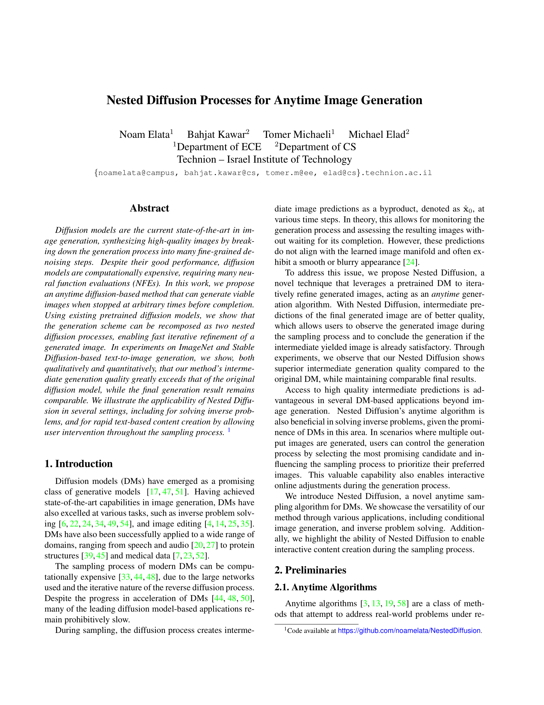

Nested Diffusion Processes for Anytime Image Generation
WACV 2024
Technion - Israel Institute of Technology
Abstract
Diffusion models are the current state-of-the-art in image generation, synthesizing high-quality images by breaking down the generation process into many fine-grained denoising steps. Despite their good performance, diffusion models are computationally expensive, requiring many neural function evaluations (NFEs). In this work, we propose an anytime diffusion-based method that can generate viable images when stopped at arbitrary times before completion. Using existing pretrained diffusion models, we show that the generation scheme can be recomposed as two nested diffusion processes, enabling fast iterative refinement of a generated image. In experiments on ImageNet and Stable Diffusion-based text-to-image generation, we show, both qualitatively and quantitatively, that our method's intermediate generation quality greatly exceeds that of the original diffusion model, while the final generation result remains comparable. We illustrate the applicability of Nested Diffusion in several settings, including for solving inverse problems, and for rapid text-based content creation by allowing user intervention throughout the sampling process.
Anytime Image Generation
Nested Diffusion is an anytime algorithm for using pretrained Diffusion Models
During generation, Nested Diffusion will yield sample images which converge to the final result.
|  |
Images created with Nested Diffusion will improve in quality untill the generation process terminates, with the final samples comparable in quality to a vanilla diffusion model with the same computational budget. The user also has the choice to stop the process at any point if the current image is satisfactory. Nested Diffusion can be used with conditional and unconditional diffusion models, extending to text-to-image applications. Additionally, Nested Diffusion also works well in diffusion-based inverse-problem solving methods, such as DDRM. Quantitative comparisons can be found in the paper.
Try It Yourself!
Nested Diffusion is available with Stable Diffusion online thanks to the generous help of HuggingFace.
If space requires restarting, please wait a few minutes while the model is downloaded.
Interactive generation
Nested Diffusion's back-and-forth algorithm inherently enables interacting with the diffusion process. In our paper, we propose as an example pruning of unwanted generation trajectories, as well as intervation in the desired guidance during generation.
|  |
Paper
|  | Nested Diffusion Processes for Anytime Image Generation Noam Elata, Bahjat Kawar, Tomer Michaeli, Michael Elad [ Arxiv] [ Paper] |
Bibtex
Our official code implementation can be found in the official github repository. Nested Diffusion may be used online on the official HuggingFace space.
|
|
|
| [Space] | [Code] |
Acknowledgements
This webpage is based on a template made by Matan Kleiner with the help of Hila Manor.